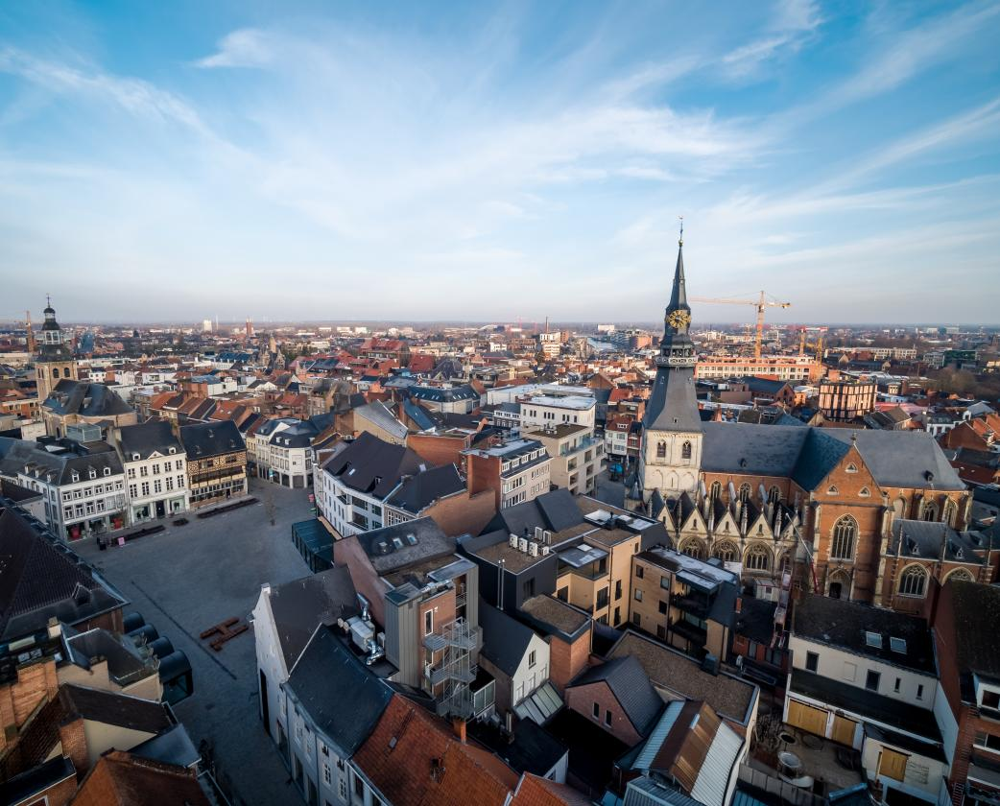
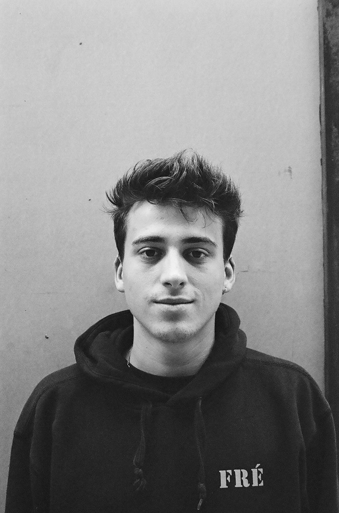
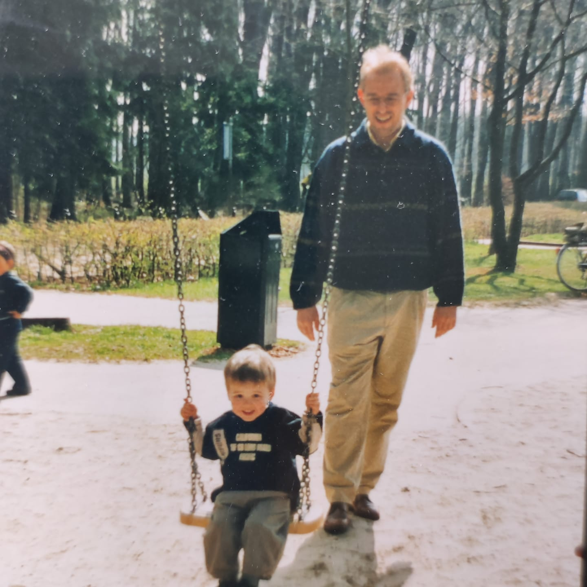
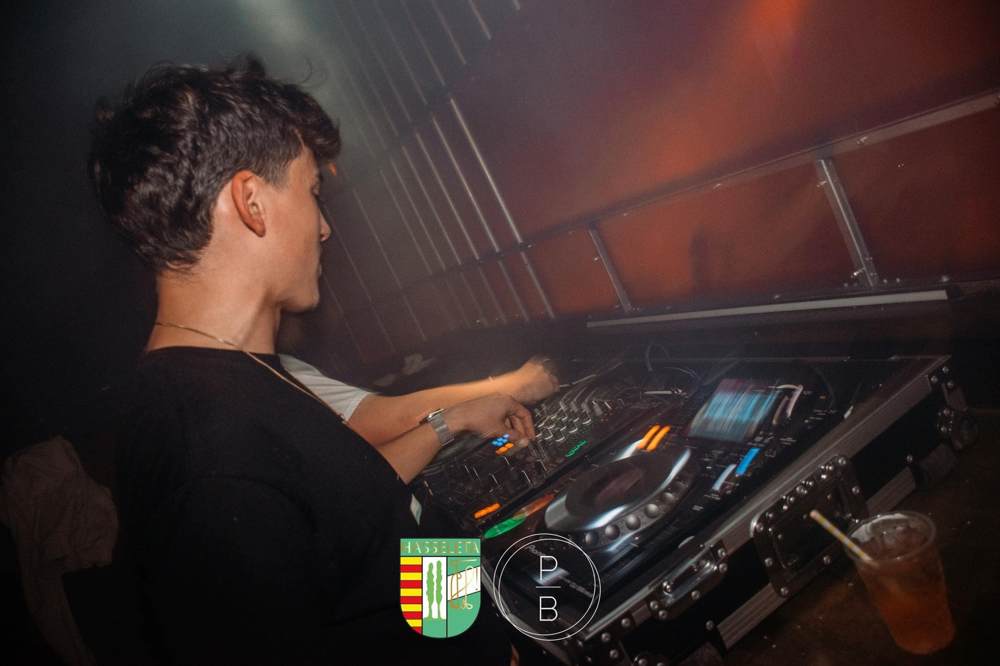
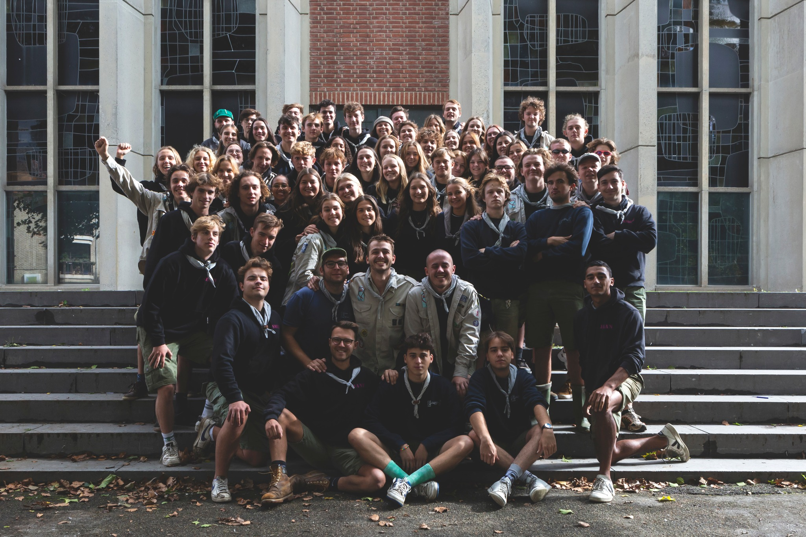

That's it, for now.
Thanks for reading.

My life started when a balding Belgian IT-nerd met a beautiful Spanish embassy worker.
These were my parents, thus making me and my two older sisters half Spanish, half Belgian.
Eventually I was born on the 18th of August in the year 2000 in an okay-sized town in
Belgium called Hasselt.
I travelled a lot with my family and friends, but I never lived abroad.
I visited: The Netherlands, Germany, Spain, France, Poland, Italy, Croatia, Florida, California, Utah, Nevada, Mecxico and Egypt.
I'd love to visit a lot more countries in the future.
Like I said, i never really lived somewhere else than Hasselt,
except when I studied 2 years in Leuven where I stayed during the week.
I love Hasselt. I'ts not to big and certainly not too small.
Crime rate is pretty low and their are certainly no dangerous animals around.
Hasselt is a good city to start a family and live an easy life.
I do not know if i wanna stay here or not. We'll see.


EDUCATION
I graduated highschool in 2018. I studied 'Wiskunde Wetenschappen' which roughly translates to Maths & Sciences.
I Always knew I did not really belong in the school that I went too.
I had a lot of friends and had pretty good grades (because I am smart, duh), but my interests lie somewhere else.
I almost studied for fighterpilot at the Airforce but right before I could start the doctor told me my eyesight was just not good enough.
I then persued a bachelor in economics but that only lasted a semester.
After that I thought to myself I should probably study something with sciences because I was good at it and actually enjoyed doing that from time to time.
So i did that for 3 months and then said "nope".
Since I wasn't studying, I started working at different places and warehouses.
This is where I really understood why I had toget a good degree.
So in september 2019 until february 2022 I studied Physiotherapy.
Eventually I quit this aswel. Both Covid-19 and my lack of interest made
do it. But the main reason was the passing of my father on 20-8-2021.
This turned me quite depressed and let to a loss of empathy.
After losing control and suffering from panic attacks I managed to reprogrammed
my brain through therapy and mostly mindfulness and meditation so i became a better version of myself and pursue my dreams again.


HOBBYS
I think I was around the age of six when I started playing football.
I still play as a midfielder for Herk Sport.
I always dreamt about playing for my favourite club, KRC Genk.
I once did when I was a child, for a month and then I got kicked out because I didn't behave properly.
Oh well.
Around the age of seven I started going to de scouts of Sint-Michiel Anne Frank.
I am still active as a leader. here is where i found love,
friendship and perseverance. I learned a lot during my time at the scouts and still am.
I believe everyone who goes to the scouts has a certain advantage in life compared to those who never went or were associated with the scouts.
Social, building and resbonsability skills is what I find important in life.
I learned these skills mainly because of scouts.
Then we got music. Whenever I listen to music I become a different person.
I love music like I love lemons. A LOT! Music brings people together and it can change the mood and setting instantly.
I learned myself how to play the guitar and a little pit of piano. I never had time for real lessons because of my other hobbys which I find unfortunate.
Therefore I not a professional musician.
I do however make my own beats with my DJ-partner in my free time.
He is called Rikkie FF. My stagename is dr.FRE.
We dj at parties from time to time.
It really is an awesome hobby. Free entrance, free drinks, controlling the music, the attention AND getting paid!
Truly amazing.
We like to play commercial music, RnB, HipHop (my preference), DnB, House and sometimes techno.
It all depends on the party I guess.
Oh yeah, I used to be in the national youth choir.
I think thats why I love to sing in the car and shower (note: not at same time).
All these hobby's together with school, family and friends makes it difficult sometimes to keep up with my schedule.
That's why I am always planning and trying to figure out for myself what I find most important and what is less important.
I struggle to choose sometimes because my interests are all over the place.
It's a blessing with a curse really. I seem to be easily entertained and inspired but also quickly distracted unless I've got work to do.
